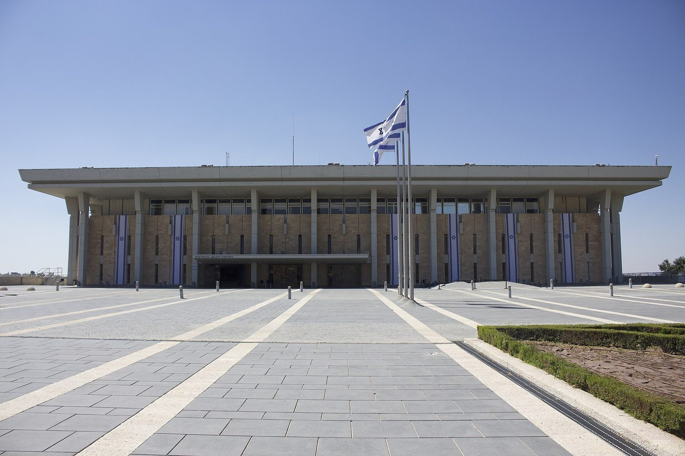
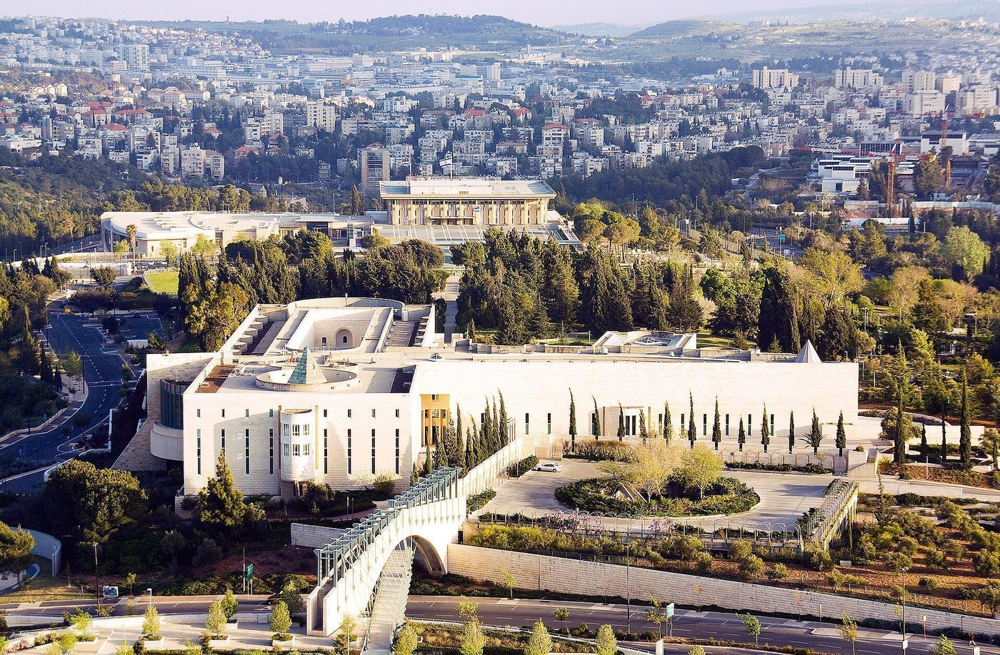

Was diese Seite zeigt – und wer die Bewertungen trifft
Diese Seite behauptet nichts aus eigener Autorität. Die Liste der Gesetze stammt aus der Discriminatory Laws Database von Adalah, dem juristischen Zentrum für die Rechte der arabischen Minderheit in Israel (Eigenname; vertreten werden palästinensische Bürger Israels). Die Einstufung „diskriminierend“ ist damit Adalahs Bewertung und wird auch so zugeschrieben. Die Gesetzestexte selbst sind öffentlich und in der Datenbank verlinkt – wer prüfen will, kann prüfen.
Drei Ebenen sind zu unterscheiden, und sie werden auf dieser Seite nicht vermischt:
Politiker-Aussagen sind auf dieser Website grundsätzlich kein Beleg für Tatsachen; sie stehen mit Fundstelle auf einer eigenen Seite.
Nationalstaatsgesetz 2018: Selbstbestimmung nur für eine Volksgruppe
Am 19. Juli 2018 verabschiedete die Knesset mit 62 zu 55 Stimmen das Basic Law: Israel – The Nation-State of the Jewish People. Basic Laws haben in Israel Verfassungsrang: Sie stehen über einfachen Gesetzen und sind Maßstab für deren Auslegung. Das Gesetz regelt keine Einzelfrage, sondern definiert, wem der Staat gehört.

72 Gesetze – von 1939 bis 2026
Adalah ordnet die Gesetze nach Themenfeldern: Staatsbürgerschaft, bürgerliche und politische Rechte, Strafrecht, Bildung, Vereinigungsfreiheit, Landrechte, Militärdienst, nationale Symbole, politische Beteiligung und Religion. Die folgende Übersicht ist nach Epochen gegliedert – so wird sichtbar, dass es sich nicht um Ausrutscher einzelner Regierungen handelt, sondern um eine über acht Jahrzehnte fortgeschriebene Linie.
Die Gesetze der Gründungsjahre schufen das Fundament: Wer einwandern darf, wem das Land gehört, wessen Eigentum als „abwesend“ gilt. Sie sind bis heute in Kraft.
| Jahr | Gesetz | Worum es geht |
|---|---|---|
| 1939 | Trade with the Enemy Ordinance | Aus der Mandatszeit übernommen, später gegen palästinensisches Eigentum angewandt |
| 1945 | Defense Regulations, Regulation 125 (Closed Zones) | Britische Notstandsverordnung; Grundlage für Sperrgebiete – Bewohner kommen nicht auf ihr eigenes Land |
| 1948 | Law and Government Ordinance, Artikel 18A | Regelt Feiertage und Ruhetage nach jüdischem Kalender |
| 1949 | Flag and Emblem Law · State Stamp Law | Staatssymbole ausschließlich aus jüdischer Tradition |
| 1950 | Law of Return | Jeder Jude weltweit hat Anspruch auf Einwanderung und Staatsbürgerschaft |
| 1950 | Absentees' Property Law | Überführt das Eigentum der 1948 Geflohenen und Vertriebenen in staatliche Verwaltung – auch das der „anwesenden Abwesenden“ im Land |
| 1952 | Citizenship Law · Entry into Israel Law | Staatsbürgerschaft und Einreise – Gegenstück zum Rückkehrgesetz |
| 1952 | World Zionist Organization–Jewish Agency (Status) Law | Räumt nichtstaatlichen jüdischen Organisationen staatsähnliche Aufgaben ein |
| 1953 | Jewish National Fund Law | Sonderstellung des JNF/KKL, dessen Satzung Landnutzung für jüdische Siedlung vorsieht |
| 1953 | Land Acquisition Law (Actions and Compensation) | Legalisiert rückwirkend die Enteignung bereits übernommener Flächen |
| 1953 | State Education Law | Bildungsziele am jüdischen Kulturerbe ausgerichtet |
| 1958 | Basic Law: The Knesset | Grundlage späterer Ausschlussregeln für Kandidaturen |
| 1960 | Basic Law: Israel Lands · Israel Land Administration Law | Staatsland wird grundsätzlich nicht veräußert; Verwaltung gemeinsam mit dem JNF |
Von der Planung über die Rundfunkordnung bis zur Annexion von Ostjerusalem und den Golanhöhen: Gesetze, die Raum, Öffentlichkeit und Symbolik ordnen.
| Jahr | Gesetz | Worum es geht |
|---|---|---|
| 1965 | National Planning and Building Law | Planungsrecht; zahlreiche palästinensische Ortschaften blieben ohne anerkannten Bebauungsplan |
| 1965 | Planungsrecht – Beschränkung von Wasser, Strom und Telefon | Versorgung darf an Gebäude ohne Genehmigung verweigert werden – trifft „nicht anerkannte“ Dörfer im Negev |
| 1965 | Broadcasting Authority Law | Programmauftrag am jüdischen Erbe ausgerichtet |
| 1967 | Protection of Holy Sites Law | Schutz in der Praxis vor allem für jüdische Stätten umgesetzt |
| 1969/1976 | Yad Yitzhak Ben-Zvi · Mikve Israel | Staatliche Förderung ausdrücklich jüdischer Bildungs- und Forschungseinrichtungen |
| 1971 | Religious Jewish Services Law | Staatliche Religionsdienste nur für eine Religionsgemeinschaft |
| 1980 | Basic Law: Jerusalem, Capital of Israel | Annexion Ostjerusalems – vom UN-Sicherheitsrat für nichtig erklärt |
| 1980 | Foundations of Law Act | Lücken im Recht sind nach den Grundsätzen des „jüdischen Erbes“ zu füllen |
| 1981 | The Golan Heights Law | Anwendung israelischen Rechts auf besetztes syrisches Gebiet |
| 1981 | Public Lands Law (Eviction of Squatters) | Räumung ohne Gerichtsverfahren – zentrales Instrument im Negev |
| 1981 | Interpretation Law | Auslegungsregeln zugunsten hebräischer Fassungen |
| 1990 | Second Authority for Television and Radio Law | Rundfunkauftrag am jüdischen Erbe ausgerichtet |
| 1992 | Basic Law: The Government | Grundlage für Notstandsbefugnisse |
| 1994 | Knesset Law | Regeln des Parlamentsbetriebs |
| 1998 | Use of Hebrew Date Law | Verpflichtender hebräischer Kalender in amtlichen Dokumenten |
| 2002 | Law of Political Parties, Amendment No. 12 | Ausschluss von Parteien, die den jüdischen Charakter des Staates ablehnen |
Die dichteste Phase: Familienzusammenführung, Strafrecht, Haftrechte, Wohnsegregation, Gedenken und die Finanzierung von Menschenrechtsorganisationen.
| Jahr | Gesetz | Worum es geht |
|---|---|---|
| 2003 | Citizenship and Entry into Israel Law („Ban on Family Unification“) | Faktisches Verbot der Familienzusammenführung mit Ehepartnern aus Westbank und Gaza; als „befristete Anordnung“ erlassen und immer wieder verlängert |
| 2006 / 2010 | Criminal Procedure Law (Sicherheitsverdächtige) | Verlängerte Haft ohne richterliche Vorführung |
| 2008 | Criminal Procedure Law, Amendment No. 4 | Vernehmungen von „Sicherheitsverdächtigen“ ohne Aufzeichnungspflicht |
| 2009 | National Priority Areas (Economic Efficiency Law) | Fördergebiete – palästinensische Ortschaften weitgehend ausgenommen |
| 2009 | Kinderimpfungen und Kindergeld | Kürzung von Leistungen mit faktisch einseitiger Wirkung |
| 2009 | Israel Land Administration Law, Amendment No. 7 | Privatisierung von Staatsland unter Beteiligung des JNF |
| 2009 | Regional Councils Law (Wahltermine), Special Amendment No. 6 | Verschiebung von Kommunalwahlen – betraf vor allem palästinensische Regionalräte |
| 2010 | „Negev Individual Settlements“ (Negev Development Authority Law) | Einzelhöfe für jüdische Familien im Negev, während beduinische Dörfer unanerkannt bleiben |
| 2010 | Land (Acquisition for Public Purposes) Ordinance, Amendment No. 10 | Erschwert die Rückgabe enteigneten Landes, das nie für den angegebenen Zweck genutzt wurde |
| 2010 | „Pardon Law“/„Amnesty Law“ | Verfahrenseinstellung und Löschung von Einträgen für Beteiligte am Abkopplungsplan |
| 2011 | „Admissions Committees Law“ | Aufnahmeausschüsse dürfen Bewerber nach „sozialer Eignung“ ablehnen – faktische Wohnsegregation |
| 2011 | „Nakba Law“ | Streichung staatlicher Mittel für Einrichtungen, die die Nakba begehen |
| 2011 | „Anti-Boycott Law“ | Zivilrechtliche Haftung für den Aufruf zum Boykott, auch von Siedlungsprodukten |
| 2011 | Citizenship Law, Amendment No. 10 | Entzug der Staatsbürgerschaft bei „Vertrauensbruch“ gegenüber dem Staat |
| 2011 | „Foreign Government Funding Law“ | Offenlegungspflichten, die vor allem Menschenrechtsorganisationen treffen |
| 2011 | Israel Lands Law, Amendment No. 3 | Beschränkungen für ausländischen Grundbesitz |
| 2011 | Entzug von Bezügen für Knesset-Abgeordnete nach Straftaten | Streichung von Bezügen amtierender oder früherer Abgeordneter |
| 2011/2012 | Prisons Ordinance, Amendments No. 40 und 43 | Einschränkung der Treffen zwischen Gefangenen und Anwälten |
| 2012 | Civil Wrongs Law, Amendment No. 8 | Schließt Schadensersatzklagen gegen den Staat für Schäden durch Sicherheitskräfte in den besetzten Gebieten weitgehend aus |
| 2012 | Criminal Procedure Law, Amendment No. 6 · Income Tax Ordinance, Amendment No. 191 | Verfahrens- und Steuerregeln mit einseitiger Wirkung |
| 2014 | Increased Governance Law | Anhebung der Sperrklausel – zielt auf die kleinen palästinensischen Parteien |
| 2015 | Mindeststrafen für Steinewerfer | Feste Mindeststrafen ohne Rücksicht auf den Einzelfall |
| 2015 | Streichung des Kindergelds bei „Sicherheitsdelikten“ · Geldbußen für Eltern | Bestraft ausdrücklich auch Familienangehörige, die nichts getan haben |
| 2015 | Streichung von Verfahrensgarantien für „Sicherheitshäftlinge“ | Weniger Rechte im Verfahren als bei anderen Beschuldigten |
| 2016 | „Anti-Terror“ (Counter-Terrorism) Law | Weit gefasste Straftatbestände und Beweiserleichterungen |
| 2016 | „Stop-and-Frisk“ Law | Durchsuchung ohne konkreten Verdacht |
| 2016 | „Expulsion of MKs“ Law | Parlamentsmehrheit kann gewählte Abgeordnete ausschließen |
| 2016 | NGO „Funding Transparency“ Law | Kennzeichnungspflichten, die faktisch nur Menschenrechtsorganisationen treffen |
Die jüngsten Gesetze – darunter das Nationalstaatsgesetz und, im laufenden Jahr, ein Beschäftigungsverbot für Lehrkräfte aus Einrichtungen der Palästinensischen Autonomiebehörde.
| Jahr | Gesetz | Worum es geht |
|---|---|---|
| 2017 | Kaminitz-Gesetz (Änderung 116 des Planungs- und Baugesetzes) | Verlagert die Ahndung von Bauen ohne Genehmigung von den Gerichten auf die Verwaltung, kürzt den Rechtsschutz, vervielfacht die Bußgelder und hebt das Strafmaß auf bis zu drei Jahre Haft. Betrifft nach Adalah rund 50.000 Häuser palästinensischer Staatsbürger Israels und Ostjerusalemer. |
| 2018 | Basic Law: Israel – The Nation-State of the Jewish People | Selbstbestimmung „einzigartig für das jüdische Volk“, Arabisch verliert den Amtssprachenstatus, jüdische Besiedlung als nationaler Wert |
| 2018 | Counter-Terrorism Law, Amendment No. 3 | Ausweitung der Terrorismus-Tatbestände |
| 2022 | Amendment to the Police Ordinance („Ben-Gvir Law“) | Erweitert die politische Weisungsbefugnis des Ministers gegenüber der Polizei |
| 2022 | Absorption of Discharged Soldiers Law | Vergünstigungen an den Militärdienst gekoppelt – von dem palästinensische Staatsbürger faktisch ausgenommen sind |
| 2023 | Revocation of Citizenship or Residency of a Terrorist who Receives Compensation | Entzug von Staatsbürgerschaft oder Aufenthaltsrecht |
| 2023 | „Hametz Law“ (Patient's Rights Act, Amendment No. 13) | Erlaubt Krankenhäusern, während Pessach gesäuerte Speisen zu verbieten |
| 2023 | Combating Illegal Weapons Bill | Verschärfte Waffendelikte mit einseitiger Anwendungspraxis |
| 2026 | Law to Prevent the Employment of Teaching Staff from Palestinian Authority Institutions | Beschäftigungsverbot für Lehrkräfte aus Einrichtungen der Autonomiebehörde (jüngster Eintrag der Datenbank; inhaltliche Detailprüfung dieser Website steht noch aus) |
Zwei Rechtsordnungen in einem Gebiet
Im Westjordanland leben zwei Bevölkerungsgruppen nebeneinander – und stehen im Ernstfall vor zwei verschiedenen Gerichten. Palästinenser unterstehen dem israelischen Militärrecht und werden vor Militärgerichten verhandelt. Israelische Siedler im selben Gebiet unterstehen dem israelischen Zivil- und Strafrecht und werden vor zivilen Gerichten verhandelt. Grundlage ist eine Entscheidung des israelischen Generalstaatsanwalts aus den frühen 1980er Jahren.
| Palästinensische Bewohner | Israelische Siedler | |
|---|---|---|
| Zuständiges Gericht | Militärgericht | Ziviles israelisches Gericht |
| Anzuwendendes Recht | Militärbefehle der Besatzungsverwaltung | Israelisches Strafrecht |
| Richter | Offiziere | Zivile Berufsrichter |
| Ermittlungsbehörde | Armee und Inlandsgeheimdienst | Israelische Polizei |
| Haft ohne Anklage | Verwaltungshaft, in Sechs-Monats-Schritten unbegrenzt verlängerbar | Nur in engen Ausnahmefällen |
Für das Jahr 2010 endeten nach einer Auswertung von Armee-Zahlen durch das israelische Magazin +972 99,74 Prozent der Verfahren gegen Palästinenser vor Militärgerichten mit einer Verurteilung: 25 Freisprüche bei 9.542 Verfahren. Der Menschenrechtsbericht des US-Außenministeriums nannte für 2013 ebenfalls über 99 Prozent; andere Erhebungen kommen für spätere Jahre auf Werte um 96 Prozent. Ehrlichkeitshinweis: Für die Jahre ab 2020 war bei dieser Recherche keine belastbare Gesamtquote auffindbar. Deshalb steht hier nur, was mit Jahr und Quelle belegt ist – keine Fortschreibung auf heute.
Die israelische Bürgerrechtsvereinigung ACRI hat diesen Zustand 2014 unter dem Titel „One Rule, Two Legal Systems“ systematisch dargestellt: Unterschiede bestehen unter anderem bei der Strafmündigkeit, der zulässigen Haftdauer vor der ersten richterlichen Vorführung, dem Zugang zum Anwalt, den Beweisregeln und den Strafrahmen. Nicht die Tat entscheidet, welches Recht gilt – sondern wer sie begangen hat.
Ethnokratie: was der Fachbegriff bezeichnet
Der israelische Politikgeograf Oren Yiftachel (Ben-Gurion-Universität des Negev) hat für Regime dieser Bauart den Begriff Ethnokratie ausgearbeitet – zuerst 1999 in einem Aufsatz, dann 2006 im Buch Ethnocracy: Land and Identity Politics in Israel/Palestine (University of Pennsylvania Press).
Weder Demokratie noch Diktatur
Eine Ethnokratie hat Wahlen, Parlament und Gerichte – aber Rechte und Möglichkeiten hängen primär von ethnischer Herkunft und geografischer Lage ab, nicht von der Staatsbürgerschaft allein.
Judaisierung als Leitstrategie
Die zentrale Ausprägung in Israel/Palästina ist nach Yiftachel die planmäßige Verschiebung von Demografie und Landkontrolle zugunsten einer Gruppe.
Sechs Grundpfeiler
Yiftachel nennt Demografie, Land und Besiedlung, Streitkräfte, Kapitalströme, Verfassungsrecht und öffentliche Kultur als die Säulen, über die ein solches Regime wirkt.
Vergleichend, nicht exzeptionell
Der Ansatz ist ausdrücklich vergleichend angelegt – Israel/Palästina ist bei Yiftachel ein Fall einer Regimeklasse, kein Sonderfall der Weltgeschichte.
Der Begriff stammt aus der politischen Geografie und beschreibt eine Regimeform. Er ist kein strafrechtlicher Vorwurf und nicht dasselbe wie die völkerrechtliche Apartheid-Frage im nächsten Abschnitt. Beide Debatten überschneiden sich, sind aber sauber zu trennen – wer sie vermischt, macht die Darstellung angreifbar. Wie sich Ethnokratie zu den Demokratie-Indizes und zu den Begriffen „ethnische Demokratie“ und „Herrenvolk-Demokratie“ verhält: Demokratie – für wen?
Der Anwendungsfall im Inneren: die Beduinen im Negev
Wie Landrecht als Instrument wirkt, zeigt sich nirgends so deutlich wie bei den palästinensischen Beduinen im Negev (Naqab) – israelische Staatsbürger, deren Dörfer der Staat teils bis heute nicht anerkennt.
Die nicht anerkannten Dörfer. Rund 35 Beduinendörfer im Negev fehlen in jedem Bebauungsplan – ihre rund 100.000 Bewohner (Adalah) leben ohne Anschluss an Strom- und Wassernetz, jedes feste Haus gilt als illegal gebaut und kann abgerissen werden. Das Planungs- und Baugesetz von 1965 erklärte die bestehenden Dörfer rückwirkend zu landwirtschaftlicher Fläche.
Der Prawer-Plan. Das Kabinett billigte im September 2011 einen Plan, der nach offiziellen Schätzungen 30.000 bis 40.000 Beduinen aus nicht anerkannten Dörfern in staatlich geplante Städte umgesiedelt hätte; im Juni 2013 passierte der Gesetzentwurf die erste Lesung der Knesset. Ausgang: Nach landesweiten Protesten („Tag des Zorns“, 30. November 2013) wurde das Vorhaben am 12. Dezember 2013 gestoppt. Die Hauszerstörungen im Negev gingen ohne das Gesetz weiter; das Kaminitz-Gesetz von 2017 verschärfte den Vollzug gegen ungenehmigtes Bauen.
Al-Araqib. Das Dorf nordwestlich von Beerscheba wurde am 27. Juli 2010 erstmals vollständig abgerissen – und seither über 240 Mal (Stand Ende 2025) wieder aufgebaut und wieder abgerissen (Zählung Adalah/Negev Coexistence Forum; ausführlich: Die Beduinen im Naqab). Ausgang: Kein Verfahren gegen den Staat; umgekehrt verklagte der Staat die Bewohner auf die Kosten der Abrisse, und Scheich Sayah al-Turi wurde 2018/19 zu mehreren Monaten Haft verurteilt, weil er auf dem Land seines Dorfes blieb.
Die Apartheid-Feststellungen – und was der IGH wirklich sagte
Innerhalb von gut drei Jahren kamen drei große Menschenrechtsorganisationen und ein UN-Sonderberichterstatter zu derselben Einstufung. 2024 folgte der Internationale Gerichtshof – mit einer Formulierung, die häufig verkürzt wiedergegeben wird.

B'Tselem (Israel). „A Regime of Jewish Supremacy from the Jordan River to the Mediterranean Sea: This Is Apartheid“ – erstmals bewertet eine große israelische Menschenrechtsorganisation das gesamte Gebiet als ein einziges Regime.
Human Rights Watch. „A Threshold Crossed“ – Verbrechen gegen die Menschlichkeit der Apartheid und der Verfolgung.
Amnesty International. „Israel's Apartheid against Palestinians: Cruel System of Domination and Crime against Humanity“.
Michael Lynk, UN-Sonderberichterstatter. Abschlussbericht mit Apartheid-Feststellung.
Internationaler Gerichtshof. Gutachten: Israels Politik und Praxis in den besetzten Gebieten verstößt gegen Artikel 3 der Anti-Rassismus-Konvention CERD.
Der Gerichtshof stellte einen Verstoß gegen Artikel 3 CERD fest. Diese Vorschrift verbietet Rassentrennung und Apartheid in einem Satz. Der IGH hat nicht ausdrücklich bestimmt, welche der beiden Varianten vorliegt – er hat den Verstoß gegen die Norm als solche festgestellt. Ausdrücklich benannt hat das Gericht: die Bewegungsbeschränkungen für Palästinenser, die Hauszerstörungen (auch als Strafmaßnahme und wegen fehlender Baugenehmigung) und ein Geflecht aus Gesetzen und Maßnahmen, das eine nahezu vollständige Trennung zwischen Siedler- und palästinensischen Gemeinden herstellt. Das Gesamtregime der Beschränkungen bewertete der Gerichtshof als systemische Diskriminierung. Human Rights Watch fasste den Befund im September 2024 unter dem Titel „World Court Findings on Israeli Apartheid a Wake-Up Call“ zusammen – das ist die Bewertung einer Organisation, nicht der Wortlaut des Gerichts.
Die letzte Woche des 25. Knesset — und warum sie hierher gehört
In der Nacht zum 17. Juli 2026 löste sich die Knesset auf. Die Wahl fand am 27. Oktober 2026 statt — zum spätestmöglichen Termin. Es war die erste volle Legislaturperiode seit 1988 und die erste Wahl seit dem 7. Oktober 2023. Davor brachte die Koalition in einer Marathonsitzung eine Reihe von Gesetzen durch, während die Opposition die Abstimmungen boykottierte.
Laut amtlichem Endergebnis der Zentralen Wahlkommission wurde der Likud mit 27 Sitzen stärkste Partei. Das Lager um Netanjahu kam auf 53, das Lager um Gadi Eisenkot auf 48, die arabisch geführten Listen auf 19 der 120 Sitze; die Wahlbeteiligung lag bei 77,9 Prozent (Times of Israel, 30.10.2026 – pressevermittelt). Am 8. November 2026 erteilte Staatspräsident Herzog Eisenkot den Auftrag zur Regierungsbildung (Frist 28 Tage); bis zur Vereidigung einer neuen Regierung bleibt Netanjahu geschäftsführend im Amt (JTA, 8.11.2026 – pressevermittelt). Eine neue Koalition gab es bis zum 16. November 2026 nicht. Zur ersten Sitzung der 26. Knesset am 10. November reichte Eisenkots Partei Yashar nach eigenen Angaben mehr als 61 Unterschriften ein, um Knessetpräsident Amir Ohana (Likud) durch Matan Kahana zu ersetzen (JNS, 11.11.2026 – pressevermittelt). Ein Ergebnis dieser Abstimmung war bis 16.11. nicht bekannt.
Diese Gesetze richten sich nicht gegen Palästinenser — sie gehören nicht in den Katalog der 72 Gesetze weiter oben. Sie stehen hier aus einem anderen Grund: Sie verändern die Instanzen, die Rechtsverstöße kontrollieren. Und genau diese Instanzen entscheiden darüber, ob aus einem Vorfall im Westjordanland ein Verfahren wird.
| Wann | Was | Kern |
|---|---|---|
| 15.7.2026 | Gesetz zur Generalstaatsanwaltschaft | Die Knesset stimmte mit 59:45 dafür, das Paket aufzuteilen. Die ursprünglich geplante Zweiteilung des Amtes in Generalstaatsanwalt und Chefankläger kam nicht zustande — dem Ausschuss fehlte vor der Auflösung die Zeit. Beschlossen wurde der Kernpunkt: Die Rechtsauffassung der Generalstaatsanwaltschaft bindet die Regierung nicht mehr; die Regierung darf selbst bestimmen, welche Position sie vor Gericht vertritt |
| 16.7.2026 | Medienreform des Kommunikationsministers Schlomo Karhi | Deutlich erweiterte staatliche Aufsicht über den Rundfunk, Wegfall bestehender Kontroll- und Schutzmechanismen |
| Juli 2026 | Einfrieren von Festnahmen | Aussetzung der Festnahmen von Wehrdienstverweigerern aus dem ultraorthodoxen Milieu — beschlossen trotz ausdrücklicher juristischer Warnungen |
| Juli 2026 | Grundgesetz-Entwurf Tora-Studium | Von den ultraorthodoxen Parteien vorangetrieben: Das Tora-Studium soll als „Grundwert im Erbe des jüdischen Volkes und im Staat Israel“ in einem Grundgesetz verankert werden — dieselbe Rechtsform wie beim Nationalstaatsgesetz |
| 17.7.2026 | Auflösung der Knesset | Angehängt an ein Parteienfinanzierungsgesetz, angenommen mit 62:0 — ausschließlich mit Stimmen der Koalition, darunter der Ministerpräsident; die Opposition nahm nicht teil |
Die Generalstaatsanwaltschaft ist in Israel zugleich die oberste Rechtsberaterin der Regierung und die Spitze der Anklagebehörde. Sie ist damit die Stelle, an der entschieden wird, ob wegen eines Vorfalls Anklage erhoben wird — auch gegen Soldaten und gegen Siedler. Wie oft das bisher geschah, steht auf der Seite Siedlergewalt: In 93,6 Prozent der Verfahren endeten die Ermittlungen ohne Anklage.
Die Vereinigung für Bürgerrechte in Israel (ACRI) erklärte zu dem Gesetz, es „gefährdet die Menschenrechte, schwächt die Rechtsstaatlichkeit und demontiert die erste Verteidigungslinie gegen den rechtswidrigen Gebrauch von Regierungsmacht“.
Was diese Seite nicht behauptet: Dass sich dadurch bereits etwas an den Zahlen geändert hätte. Das Gesetz stammt vom Juli 2026, gewählt wurde am 27. Oktober; eine neue Regierung stand bis Mitte November 2026 noch nicht. Belegt ist die Veränderung der Zuständigkeit — ihre Folgen sind noch nicht messbar. Diese Seite wird sie nachtragen, wenn sie es sind.
Quellen: Times of Israel zur Auflösung der Knesset und zur Abstimmung über das Gesetz zur Generalstaatsanwaltschaft (15.–17.7.2026) · Jerusalem Post, Erläuterung der in der Schlusswoche beschlossenen Gesetze · Israel Democracy Institute, Analyse zur geplanten Aufteilung des Amtes · Vereinigung für Bürgerrechte in Israel (ACRI) · Haaretz zum Wahltermin 27.10.2026 · Times of Israel, amtliches Endergebnis (30.10.2026) · JTA zum Regierungsbildungsauftrag (8.11.2026).
Was Umfragen in Israel selbst zeigen
Gesetze entstehen nicht im luftleeren Raum. Eine Umfrage, die das israelische Institut Geocartography in der ersten Märzwoche 2025 im Auftrag der Pennsylvania State University durchführte, wurde von der israelischen Tageszeitung Haaretz veröffentlicht und kommentiert.
Nach Milieus aufgeschlüsselt lag die Zustimmung zur Massenvertreibung bei rund 70 Prozent unter säkularen Jüdinnen und Juden und über 90 Prozent unter traditionellen, religiösen und ultraorthodoxen Befragten. Unter jüdischen Israelis unter 40 Jahren befürworteten 66 Prozent die Vertreibung der palästinensischen Staatsbürger Israels.
Erstens: Die Werte beziehen sich auf jüdische Israelis, nicht auf die Gesamtbevölkerung – rund 21 Prozent der israelischen Staatsbürgerschaft führt die amtliche Statistik als „arabische Bevölkerung“ — 2,1 Millionen Menschen, ganz überwiegend Palästinenser — und sie wurden hier nicht mitgezählt. Zweitens: Bei Umfragen trägt der genaue Fragewortlaut das Ergebnis. Der Originalfragebogen der Penn State University lag dieser Website zum Redaktionsschluss nicht vor; die Zahlen stehen deshalb ausdrücklich nach der Wiedergabe durch Haaretz. Drittens: Eine Umfrage misst Meinungen, keine Taten – sie erklärt aber, warum Gesetze wie die oben genannten parlamentarische Mehrheiten finden.
Quellen dieser Seite
Alle Quellen dieser Seite anzeigen (18 Einträge)
Stand: 16. November 2026 (laufende Entwicklungen geprüft; die Gesetzeszählung von Adalah bleibt auf dem Stand 10.8.2026).
Gesetze
- Adalah – Discriminatory Laws Database (alle vier Datenbankseiten, abgerufen 10.8.2026)
- Adalah – Israel's Jewish Nation-State Law
- Adalah – Zweiseitige Analyse des Nationalstaatsgesetzes (PDF, November 2018)
- Adalah – Knesset erweitert das Gesetz über Aufnahmeausschüsse
- palquest – Israel's Nation-State Law, 2018
Zwei Rechtsordnungen
- ACRI – One Rule, Two Legal Systems: Israel's Regime of Laws in the West Bank (2014)
- B'Tselem – The Military Courts
- +972 Magazine – Verurteilungsquote der Militärgerichte, Armeezahlen für 2010
- International Review of the Red Cross – The judicial arm of the occupation: the Israeli military courts (PDF)
Ethnokratie, Apartheid, Gesellschaft
- Oren Yiftachel – Ethnocracy: Land and Identity Politics in Israel/Palestine (University of Pennsylvania Press)
- Oren Yiftachel – „Ethnocracy“: The Politics of Judaizing Israel/Palestine (Aufsatz, PDF)
- B'Tselem – This Is Apartheid (Januar 2021)
- Human Rights Watch – A Threshold Crossed (April 2021)
- Amnesty International – Israel's Apartheid against Palestinians (Februar 2022)
- Internationaler Gerichtshof – Advisory Opinion vom 19. Juli 2024
- UNISPAL – Zusammenfassung des IGH-Gutachtens
- Human Rights Watch – World Court Findings on Israeli Apartheid a Wake-Up Call (September 2024)
- Haaretz – Analyse der Penn-State-Umfrage (3. Juni 2025)
Bildnachweise dieser Seite: Titelbild – Foto: Mohammad Hijjawi – CC BY-SA 4.0, via Wikimedia Commons · Quelle